P2
Outline
-
Simulating & Actuating Characters
- Joint torques
-
PD (Proportional-Derivative) control
✅ 在仿真基础之上，如何驱动角色动画，如何动得更好，更真实。
✅（1）控制力如何施加到角色身上
✅（2）如何计算控制力
P4
Recap
Dynamics of a Point Mass
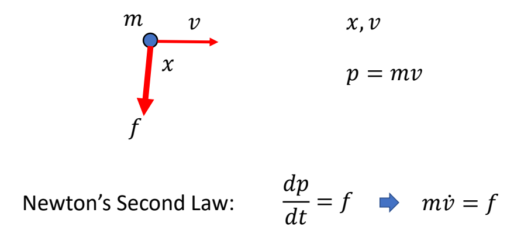
P10
Rigid Body Dynamics
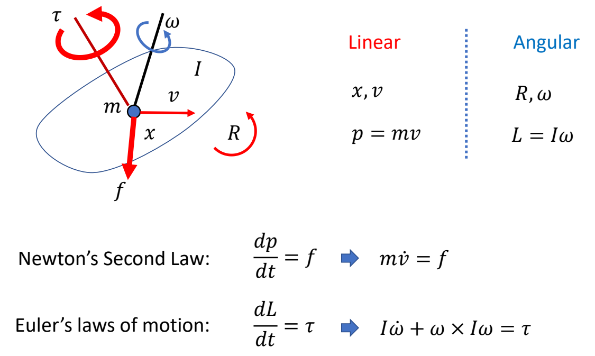
$$ \begin{bmatrix} mI_3 & 0\\ 0 & I \end{bmatrix}\begin{bmatrix} \dot{v} \\ \dot{\omega } \end{bmatrix}+\begin{bmatrix} 0\\ \omega \times I\omega \end{bmatrix}=\begin{bmatrix} f \\ \tau \end{bmatrix} $$
P12
Masses: \(m,I\)
Kinematics: \(x,v,R,\omega \)
Geometry:
• Box, Sphere, Capsule, Mesh, …
• Collision detection
• Compute \(m,I\)
✅ 在物理引擎里面定义一个刚体，需要提供这些参数。
P14
Dynamics of Articulated Rigid Bodies
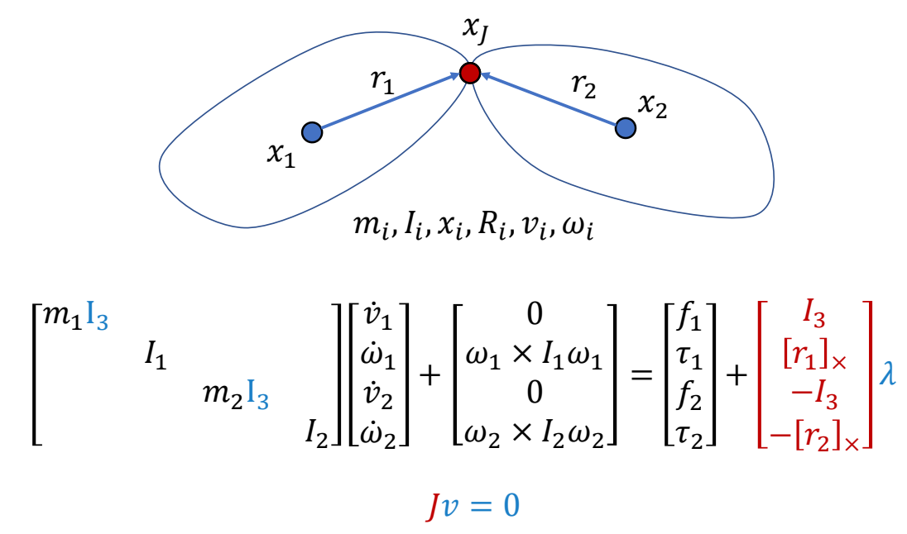
✅ 两个独立刚体，和一个不让它们断开的约束。
P15
$$ M\dot{v} +C(x,v) =f+J^T\lambda $$
P16
Simulation of a Rigid Body System
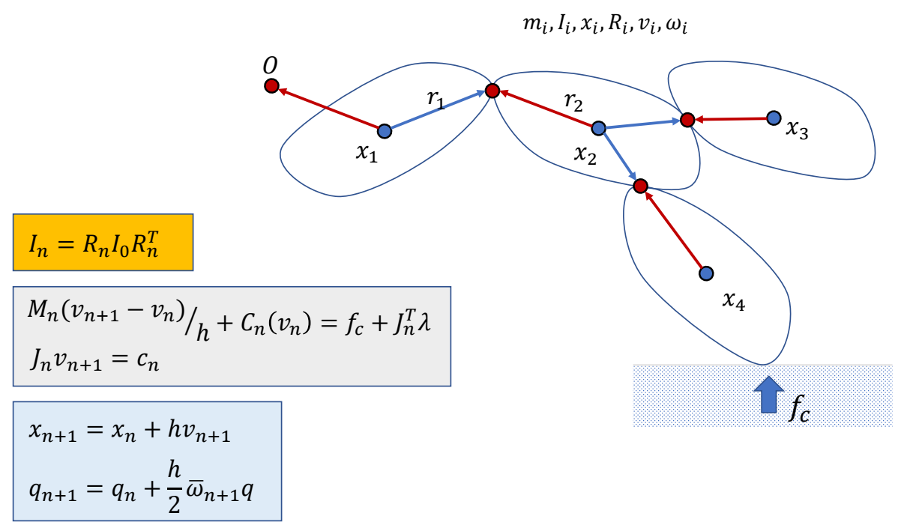
Simulating & Actuating Characters
P17
Defining a Simulated Character
Rigid bodies:
- \(m_i,I_i,x_i,R_i\)
- Geometries
Joints:
- Position
- Type
✅ Type指关节的类型，例如 Hint、Universal等。它决定了约束方程。
- Bodies
✅ 关节的数量比刚体的数量少1
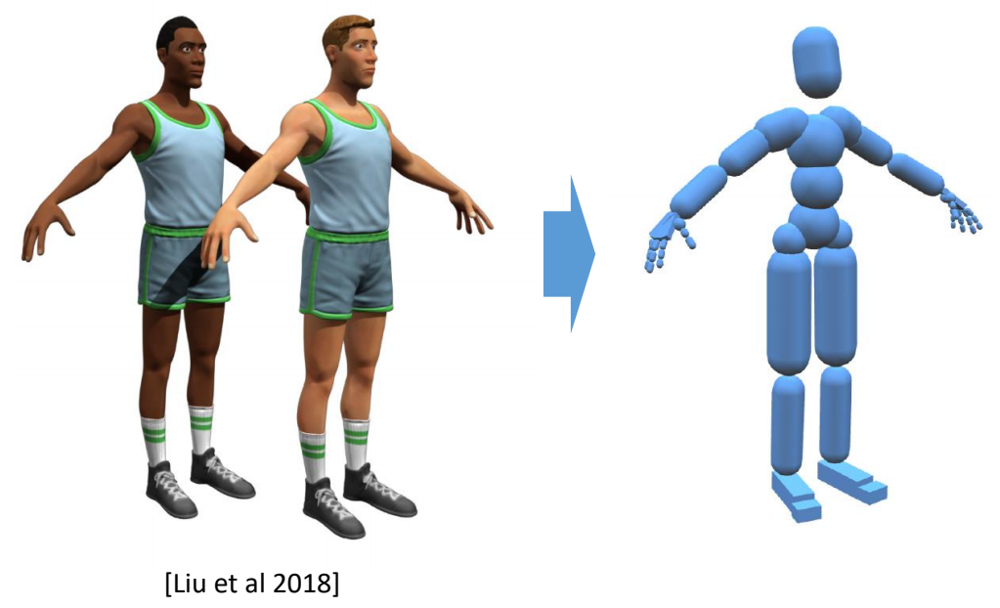
✅ 仿真过程中通常使用简单几何体代替 Mesh. 为了便于碰撞检测的计算，以及辨别里外。
P19
Simulating a Character Pipeline
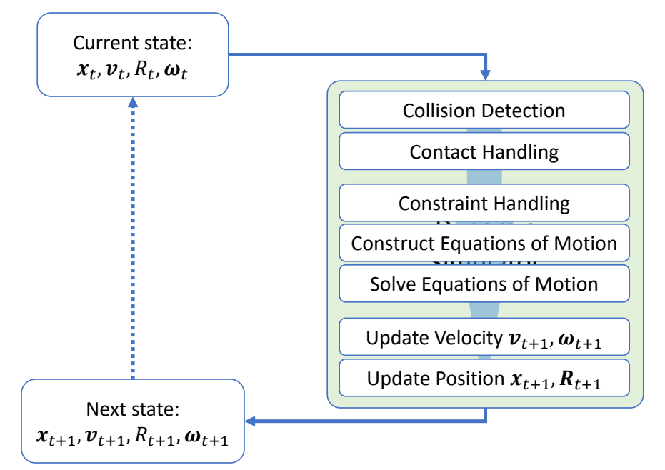
✅ 这个仿真流程是 ragdoll 效果。
P22
Actuating a Rigid Body
✅ 想让角色做指定动作，不能直接修改其状态，而是控制力影响状态。
| 力加在质心上 | 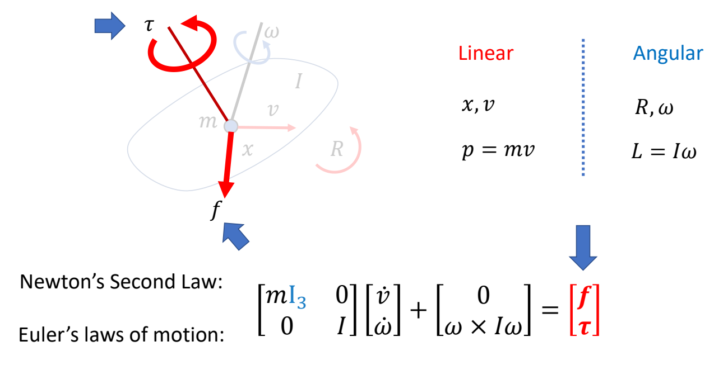 |
| ✅ 在物体边缘旋加力，等价于在质心旋加力，并旋加一个导致旋转的力矩。 | 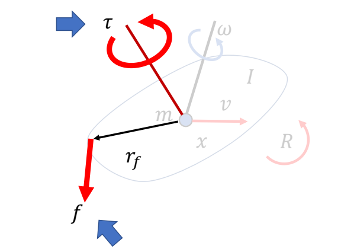 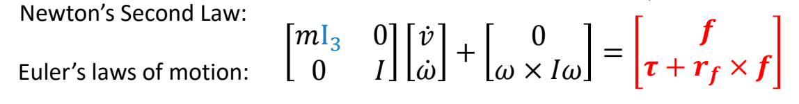 |
| ✅ 在质心上施加一个力矩，等价于施加一对大小相同方向相反的力。在质心处的合力为零，不会产生位移，只会产生旋转。 ✅ 力矩只是数学上的概念。 | 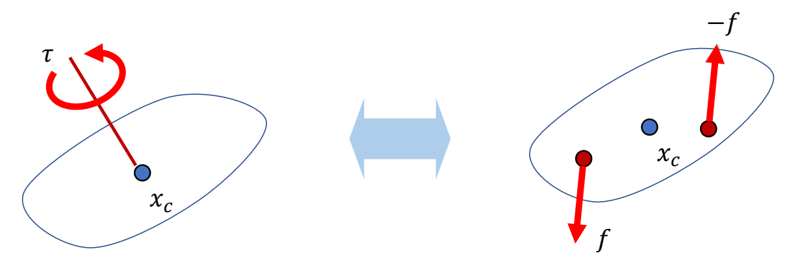 |
P26
Actuating Articulated Rigid Bodies
| ✅ 为了驱动角色，可以单独对每个刚体施加力或力矩。 | 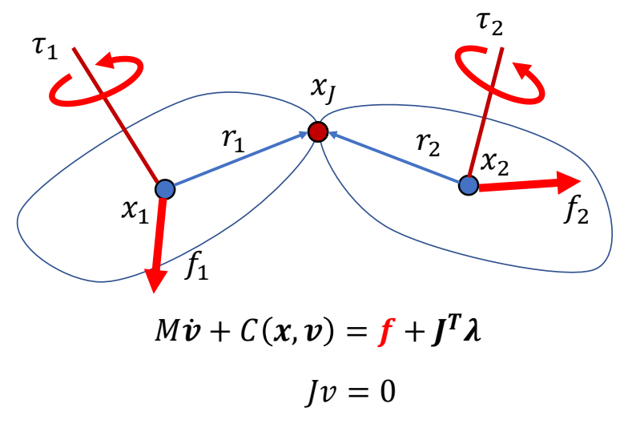 |
| ✅ 也可以在关节上施加力矩。 | 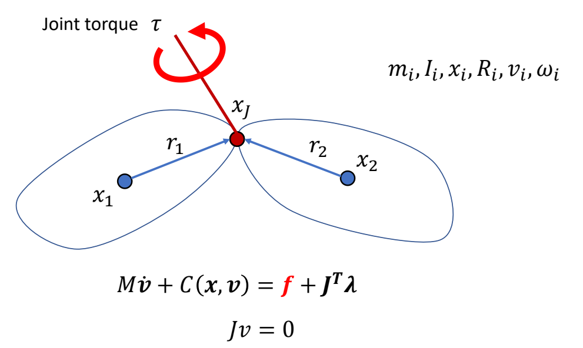 |
P29
Joint Torques
What is a joint torque?
How is a joint torque applied?
✅ 回顾前面公式，力和力矩都是施加在刚体上的，如何施加在关节上?
P33
什么是Joint Torques
✅ 关节上的力矩，可以看作是一个刚体对另一个刚体在关节处施加的成对的力，其合力为零，但可以转化为对另一刚体的力矩。
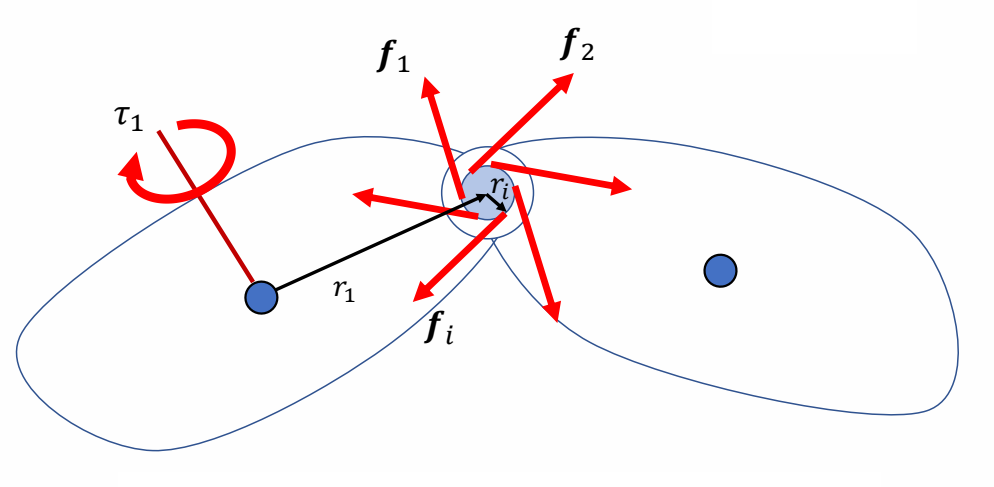
$$ \sum_{i}^{} f_i=0 $$
✅ 每个力都会对其中一个刚体的质心上产生力矩。
$$ \tau _1= \sum _ {i}^{} (r_1+r_i) \times f_i=r_1 \times \sum _ {i}^{}f_i + \sum _ {i}^{}r_i \times f_i $$
P34
由于
$$ \sum _ {i}^{} f_i=0 $$
得：
$$ \tau _1= \sum _ {i}^{} r_i \times f_i \quad \quad \quad \quad \tau _2= -\sum _ {i}^{} r_i \times f_i $$
✅ 另一个方向同理。
✅ 力矩跟关节的内置没有关系。
P36
结论：
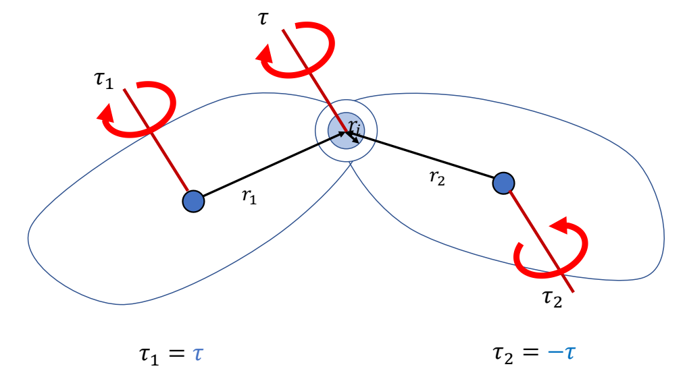
✅ 在关节上施加力矩 \( \tau\) 等价于在一个刚体上施加 \( \tau\)，在另一个刚体上施加 \(- \tau\).
P38
怎样施加Joint Torques
Applying a joint torque \( \tau\):
- Add \( \tau\) to one attached body
- Add \( -\tau\) to the other attached body
$$ M\begin{bmatrix} \dot{v}_1 \\ \dot{\omega }_1 \\ \dot{v}_2\\ \dot{\omega }_2 \end{bmatrix} + \begin{bmatrix} 0\\ \omega_1 \times I_1 \omega _1\\ 0\\ \omega_2 \times I_2 \omega _2 \end{bmatrix}=\begin{bmatrix} 0 \\ \tau \\ 0 \\ -\tau \end{bmatrix}+J^T\lambda $$
$$ Jv=0 $$
✅ 通常在子关节上加 \(\tau \)，在父关节上加 \(-\tau \)．
P40
Simulating + Controlling a Character
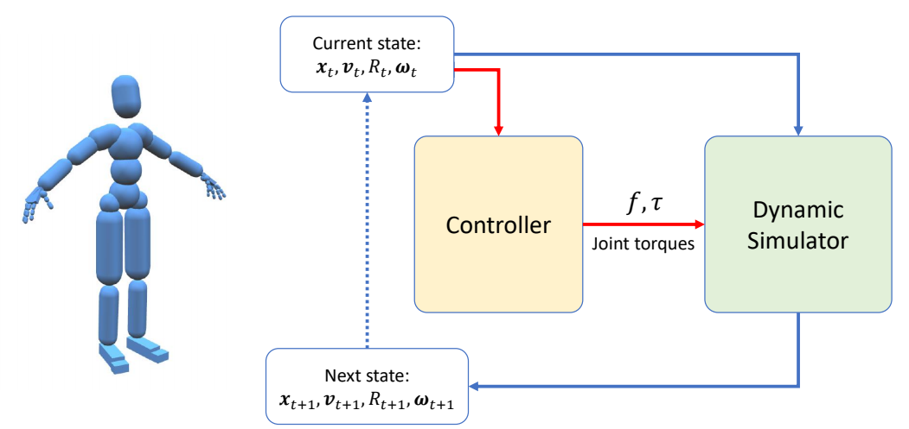
✅ 控制器，根据当前角色状态，以及额外控制信号实时计算出 \(f \) 和 \(\tau \)，影响角色动作变化。
P44
Forward Dynamics vs. Inverse Dynamics
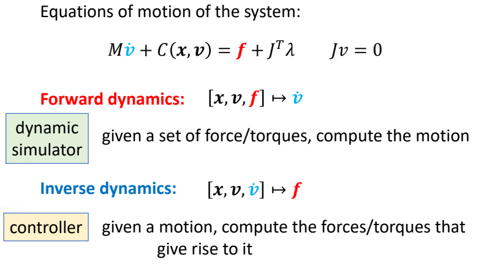
✅ 前向与后向，是一个运动方程的两种用法。
✅ 仿真器为前向部分，控制后逆向部分。
P46
Fully-Actuated vs. Underactuated
| 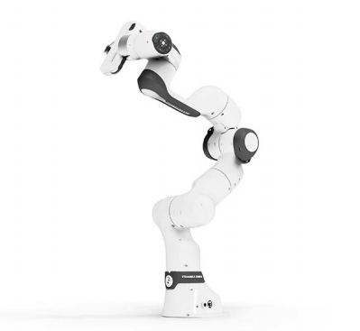 | 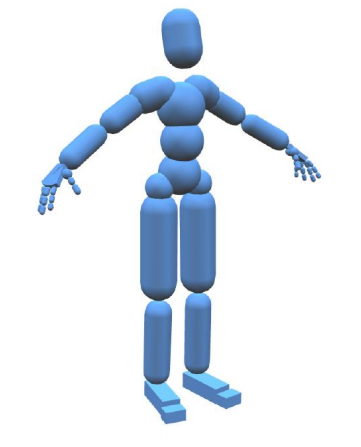 |
| If #actuators ≥ #dofs, the system is fully-actuated | If #actuators < #dofs, the system is underactuated |
| For any \([x,v,\dot{v} ]\), there exists an \(f\) that produces the motion | For many \([x,v,\dot{v} ]\) , there is no such \(f\) that produces the motion |
| ✅ 可以精确控制机械臂到达目标状态。 | ✅ 不借助外力情况，人无法控制 Hips 的状态（位置）。 |
✅ ＃actuators：\(f \) 和 \(\tau \) 的自由度。
✅ #dofs：角色状态的自由度。
✅ 避免让角色掉入无法控制的状态。
P49
Feedforward vs. Feedback
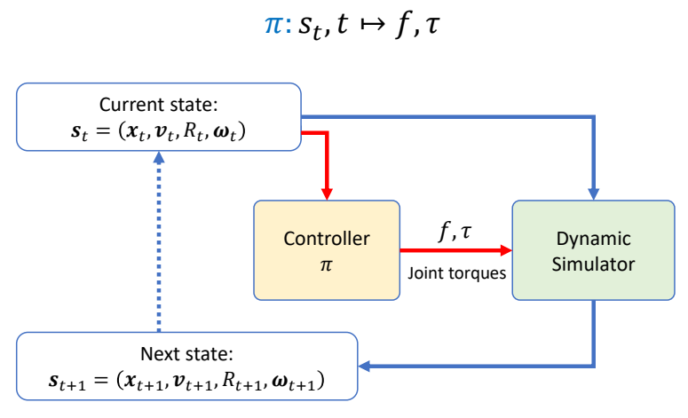
| Feedforward control | Feedback control |
|---|---|
| \(f,\tau =\pi (t)\) | \(f,\tau =\pi (s_t,t)\) |
| Apply predefined control signals without considering the current state of the system | Adjust control signals based on the current state of the system |
| Assuming unchanging system. | Certain perturbations are expected. |
| Perturbations may lead to unpredicted results ✅ 如果角色受到挠动而偏离了原计划，无法修正回来。 | The feedback signal will be used to improves the performance at the next state. |
P55
Proportional-Derivative Control
✅ 有反馈，但还是算是前向控制，因为反馈的部分和想控制的部分不完全一致。
简化问题分析
问题描述
Compute force \(f\) to move the object to the target height
✅ 例子：物体只能沿竿上下移动，且受到重力。
✅ 控制目的：设计控制器，使物体在控制力的作用下达到目标高度。
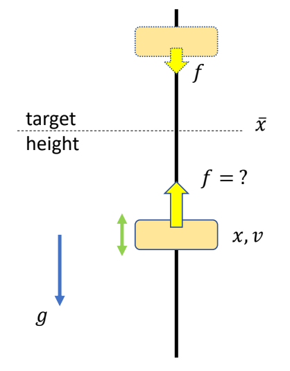
使用比例控制
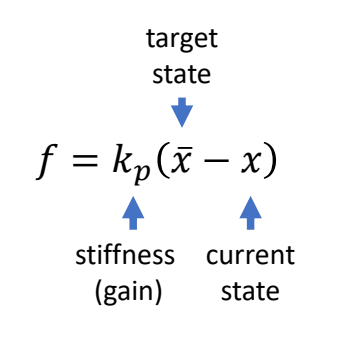
实际上：会产生上下振荡，不会停在目标位置。
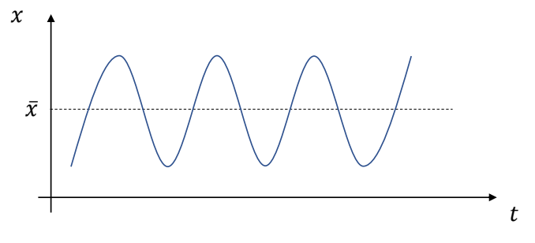
P56
比例控制+Damping
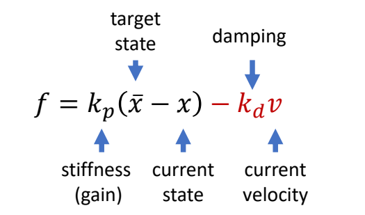
✅ 改进：如果物体已有同方向速度，则力加得小一点。
P57
比例微分控制
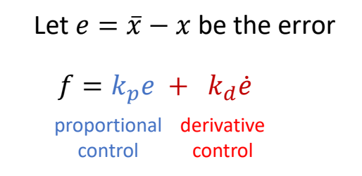
✅ 第一项：比例控制；第二项：微分控制
P59
✅ 存在的问题：为了抵抗重力，一定会存在这样的误差。
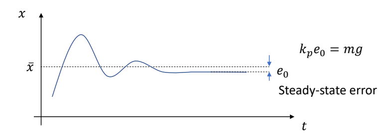
P60
Increase stiffness \(k_p\) reduces the steady-state error, but can make the system too stiff and numerically unstable
✅ 增加 \(k_p\) 可以减小误差，但会让人看起来很僵硬。
P61
比例积分微分控制 Proportional-Integral-Derivative controller
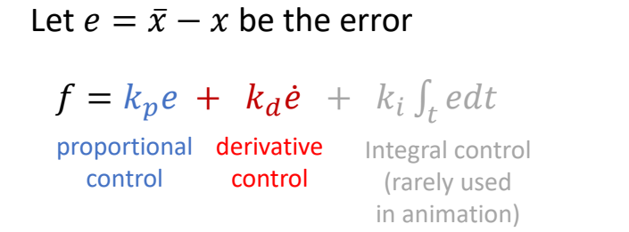
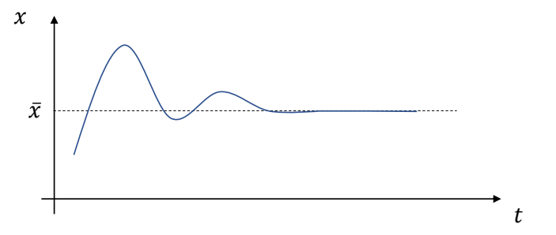
✅ 解决误差方法：积分项。
✅ 但角色动画通常不用积分项。
✅ 积分项跟历史相关，会带来实现的麻烦和控制的不稳定。
P62
PD Control for Characters
✅ 前面是 PD 的例子，这里是 PD 在物理仿真角色上的应用，计算在每个关节上施加多少力矩。
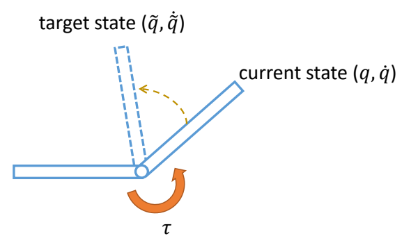
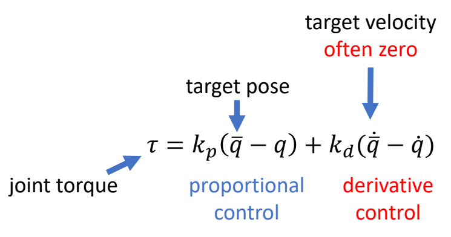
✅ 通常目标的速度 \(\bar{q} = 0\).
因此：
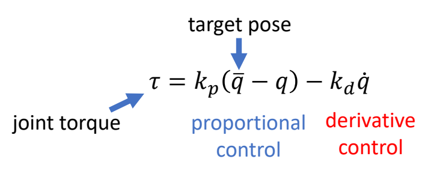
P63
PD Control for Characters的参数和效果
✅ \(K_p\) 太小：可能无法达到目标状态。
✅ \(K_p\) 太大：人体很僵硬。
✅ \(k_d\) 太小：动作有明显振荡。
✅ \(k_d\) 太大，要花更多时间到达目标资态。
P66
Tracking Controllers
✅ 引入PD Control之后，控制本质上变成了设计 targer state．
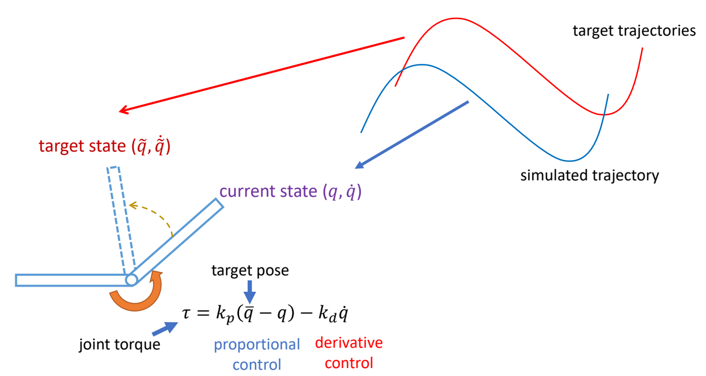
P67
Full-body Tracking Controllers
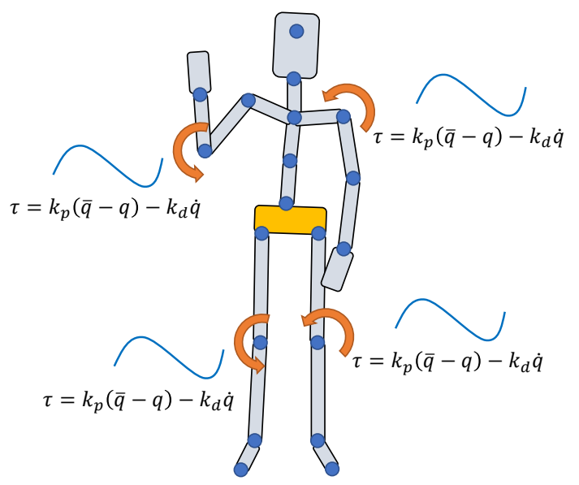
✅ 设计角色的目标轨迹。
✅ 直接用 PD 控制跟踪动捕数据会有很大的问题，原因：
（1）稳态误差。
（2）运动轨迹跟原轨迹之间会相差一点点相位
（3）欠驱动系统，有一点点误差，后面无法修复。
P71
feedforward ？ feedback
Is PD control a feedforward control?
a feedback control?
✅ 是反馈控制，因为计算 \(\tau \) 时使用了当前状态 \(q\)．
✅ 是前馈控制，因为在 PD 系统里，状态是位置不是 \(q\).
P72
欠驱动系统
欠驱动系统的问题
由于是欠驱动系统，Tracking Mocap with Joint Torques会遇到问题，因为：
\(\tau _j\): joint torques
Apply \(\tau _j\) to “child” body
Apply \(-\tau _j\) to “parent” body
All forces/torques sum up to zero
✅ 合力为零，无法控制整体的位置和朝向。
P73
解决方法：增加净外力
\(f_0,\tau _0\): root force / torque
\(\quad\quad\)Apply \(f_0\) to the root body
\(\quad\quad\)Apply \(\tau _0\) to the root body
\(\quad\quad\)Non-zero net force/torque on the character!
✅ 净外力，无施力者，用于帮助角色保持平衡。
✅ 缺点：让角色看起来像提线木偶。
P75
Mixture Simulation and Mocap
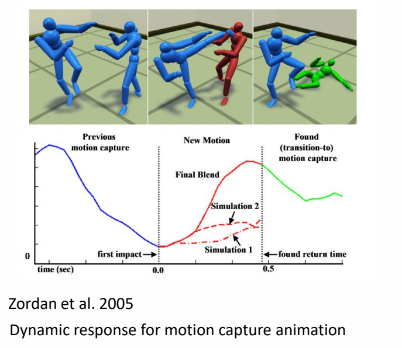
✅ 关键帧与仿真的混合。
本文出自CaterpillarStudyGroup，转载请注明出处。
https://caterpillarstudygroup.github.io/GAMES105_mdbook/